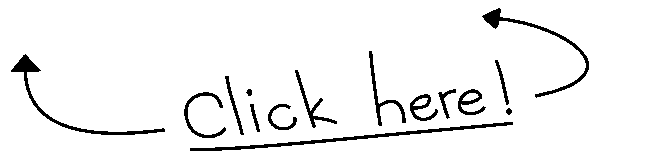
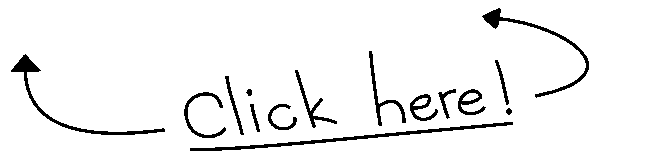

Contacto
Si estás interesad@ en ponerte en contacto conmigo ya sea para alguna oferta de trabajo, colaboración o ayudarme a mejorar esta página web, no dudes en
hacerlo a través de los siguientes métodos:
Teléfono: +34 601 27 10 78
Email: jorgebp2004@gmail.com
LinkedIn: Pínchame
GitHub
Aquí puedes encontrar el código de esta página web junto a otros proyectos que he acabado o sigo haciéndolos a día de hoy.
Entre estos proyectos se encuentran; Un emulador de SO, un bloc de notas, SIE ...
En la siguiente imagen se encuentra mi perfil.
 
